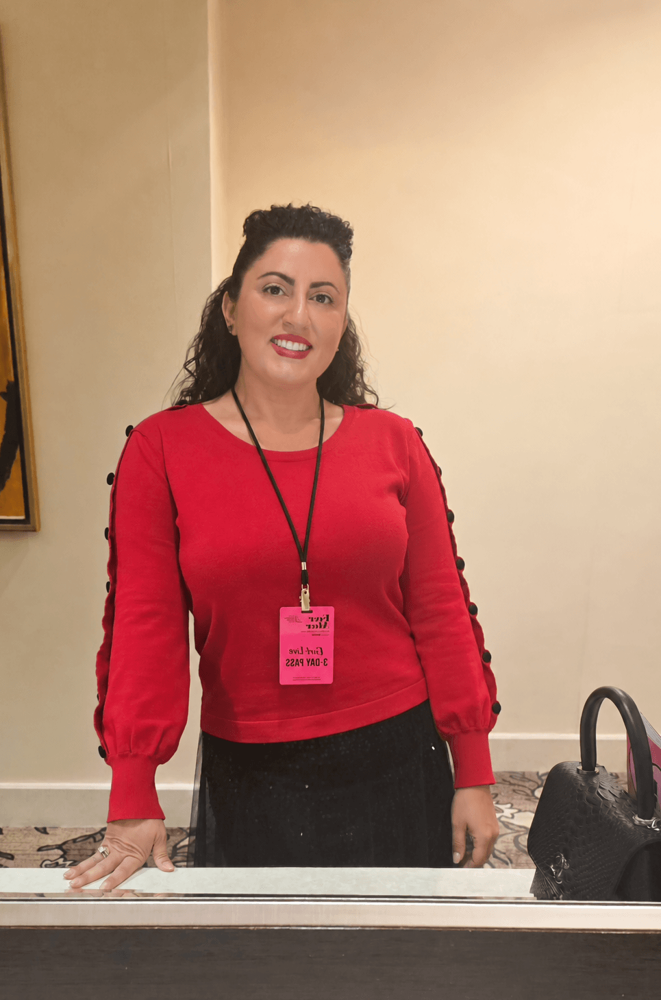
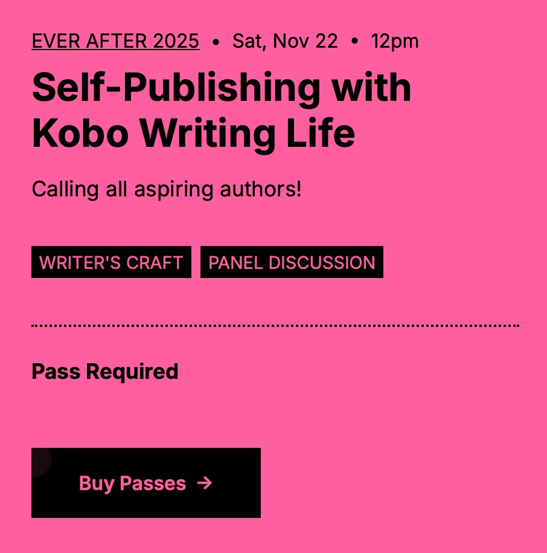
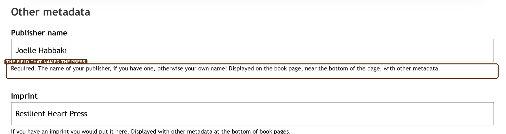
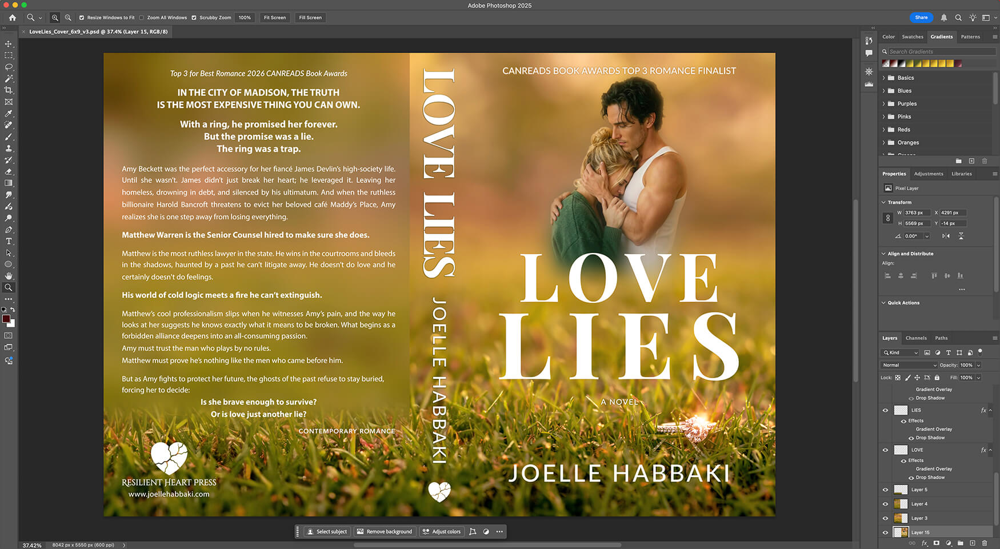
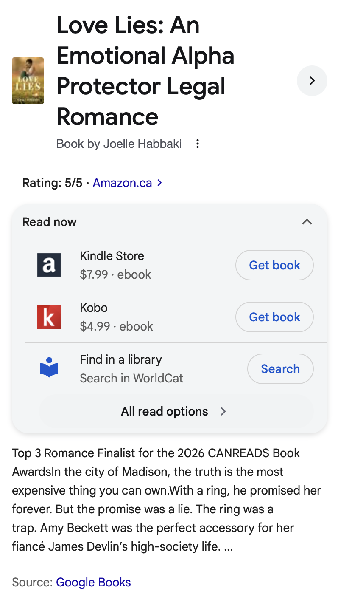

HTML MakerHow Love Lies led Joelle Habbaki to create Resilient Heart Press. First as a publishing imprint, and eventually as a statement about creative independence, technology and who gets to decide how a story is made.
In November 2025, Joelle Habbaki arrived at Ever After, the Toronto International Festival of Authors’ romance festival, with a novel almost ready for publication and a distribution decision still taking shape.
Love Lies was in its final edit. Its January release was approaching. And Habbaki had already decided that her third novel would be published differently from the books that had come before it.
She wanted to take it wide.
That decision would eventually put Love Lies on multiple retail platforms, into library systems and in front of readers beyond a single digital ecosystem. It would also, somewhat unexpectedly, lead to the creation of Resilient Heart Press.


Habbaki’s first two novels had been enrolled in Amazon’s KDP Select program, which requires digital exclusivity during the enrollment period. Love Lies would take another path.
At Ever After, a session presented by the Kobo Writing Life team caught her attention. Kobo’s approach, particularly the fact that Kobo Plus does not require exclusivity, aligned with what she had already been considering for Love Lies.
Later that day, an unplanned conversation with a member of the Kobo team turned a general publishing idea into something more concrete. A business card changed hands. After the festival, Habbaki followed up with the sort of question an entrepreneur tends to ask when presented with competing options: if she chose Kobo and Kobo Plus as part of the launch strategy, what could Kobo offer that would make the decision an easy one?
Kobo offered Habbaki access to promotional opportunities within Kobo Writing Life and discussed support around the January launch, including possible merchandising consideration.
There was also another route to readers she had been interested in reaching: libraries. Through Kobo Writing Life, authors can opt titles into OverDrive, allowing libraries to purchase digital lending rights to their books.
Suddenly, “going wide” had infrastructure behind it. Habbaki began entering metadata, uploading files and working through the long list of details involved in bringing a novel into multiple distribution channels.
Then one field on the Kobo dashboard asked for something she did not yet have:
Publishing imprint.
At first, the solution was practical. Habbaki created Resilient Heart Press as the publishing imprint behind Love Lies.
There was no elaborate launch announcement. No grand declaration that a publishing company had been born. At that stage, the name did what it needed to do: it gave the novel a publishing home.

Habbaki had been a digital designer long before generative image tools entered the mainstream. For years, creating visual work meant sourcing stock photography, compositing images, manipulating light and colour, masking, retouching and spending hours inside Photoshop turning separate elements into something cohesive.
AI image generation changed one part of that process. Instead of being limited to whatever stock models or environments happened to exist, she could generate source material closer to the image she was already trying to create. And then bring those elements into the same design process she had spent years learning.
To her, the technology was not replacing the designer. It was expanding the designer’s palette.

As debate around generative AI intensified, Habbaki increasingly encountered a blanket assumption: if AI had touched the process, the work itself was less legitimate. That did not reflect the reality of how she created.
If she was going to build a publishing home for her work, what kind of home did she actually want it to be?
One answer came quickly: a place where the artist remained responsible for the art, without being required to reject new tools simply because those tools were new.
For Habbaki, authorship was never negotiable. Writing novels is the part of the work she is most passionate about. The pleasure, and the challenge, lie in creating the characters, finding the story, rewriting sentences, solving structural problems and staying with a manuscript until it becomes the book she intended.
A full-length novel is not something she wants technology to create in her place. The satisfaction comes from doing that work herself.
But she saw no contradiction between protecting that human authorship and using modern technology elsewhere in the creative process. A tool could help generate visual material. It could accelerate experimentation. It could expand what an independent creator with design skills could execute without a large production budget.
What mattered was not whether a new tool had been used.
What mattered was who was making the creative decisions.
The question was never whether technology had been used. The question was whether the creator was still creating.
That distinction became foundational to Resilient Heart Press.
Rather than pursue an outside publisher whose creative philosophy might eventually conflict with her own, Habbaki decided to build the structure herself.
The choice was also practical. She already designed her own covers. She built her own websites. She understood digital production. She had learned independent publishing through Shattered and Surrender and was now learning wide distribution through Love Lies.
The traditional appeal of surrendering control in exchange for infrastructure looked different when much of that infrastructure was something she had already learned to build.
So Resilient Heart Press stopped being merely the name entered into a metadata field. It became an actual publishing house.

Resilient Heart Press is currently an author-led publishing house built around Habbaki’s own work. But its philosophy reaches further than one catalogue.
The press is grounded in a belief that storytelling remains fundamentally human while the tools available to storytellers will continue to change. It makes room for creators who write, design, edit, experiment, produce and learn across disciplines.
It does not assume that using new technology means abandoning craft. And it does not require creators to apologize for expanding what they are capable of making.
That position does not ask every artist to work the same way. Quite the opposite. It argues that creators should retain the freedom to decide how their own work is made.
There is something appropriately unceremonious about the way Resilient Heart Press began.
There was no boardroom. No acquisition announcement. No five-year business plan sitting beside the first manuscript. There was Love Lies, a January release approaching, a decision to take the novel wide, and a publishing dashboard asking for the name of an imprint.
Habbaki typed one in.
Everything after that gave the name its meaning.
Love Lies became the first Resilient Heart Press release. Shattered and Surrender would later be brought under the imprint as the St. Austell Duet. And the press that originally existed because one novel needed a publishing name became something larger: a home built around creative ownership, evolving technology and the belief that the person making the work should remain at the centre of the process.
HTML Maker